El primer pas és desactivar els query responders, per aixo s’ha de anar a Preferences> Privacy & Security, i buscar el checkbox.
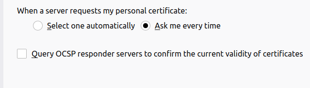Una vegada fet, hem de trobar l’icone de l’email per afegir usuaris.

Ara ens toca introduir les credencials.
alumne@carter.ofa.itb:a
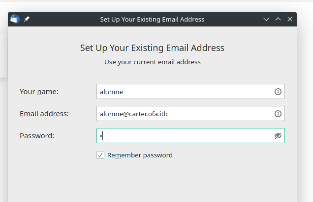En aquest exemple utilitzarem IMAP.
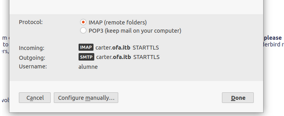Finalment ens demana que acceptem el certificat.
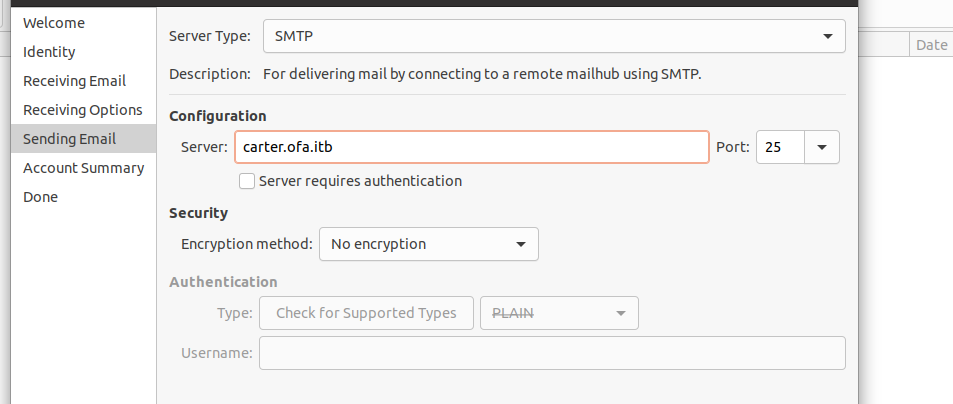El primer pas es trobar la seguent finestra:

Desde alla ens demanaran informació de l'usuari:
profe@carter.ofa.itb:chequejant 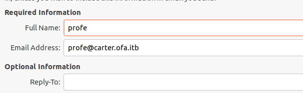Port 143 SENSE encriptacio
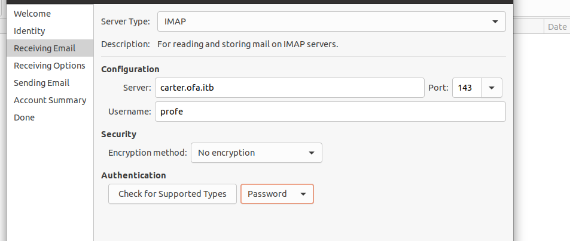Port 25 SENSE encriptacio
Finalment comprovem les dades introduides.
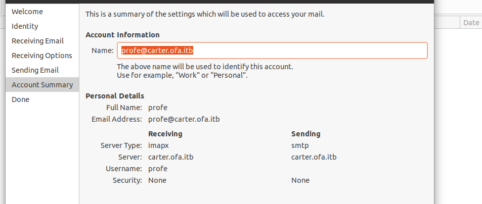Si ho hem introduit tot correctament, el servidor ens demanara la contrasenya de l’usuari, que en aquest cas es “chequejant”.
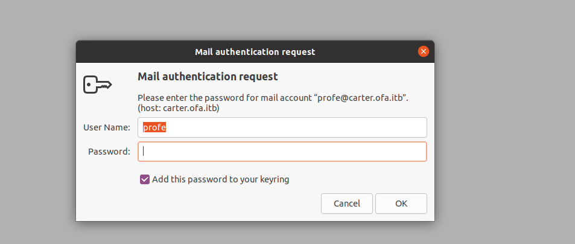Redactem el correu i enviem. 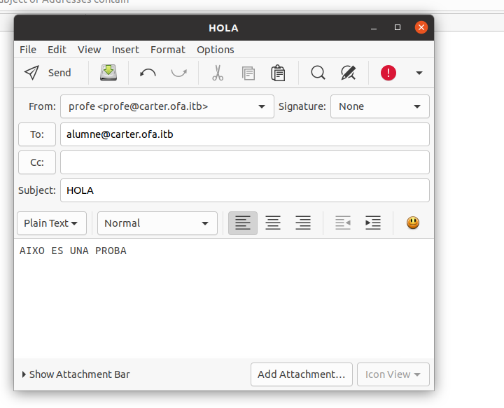
Si comprovem el mailbox de l’usuari “alumne”, podem veure el correu electrònic enviat.
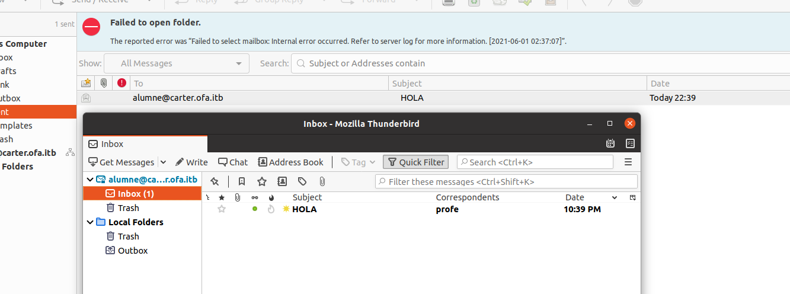oriol.filter.7e3@itb.cat
Ara, desde el Thunderbird, enviarem un correu a l’exterior.
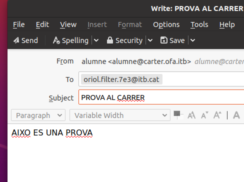Hem pogut rebre el correu sense problemes. 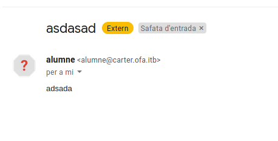
- spamassassin
- dovecot
- supervisord
profe:checkejant
Logs a https://web11/privatefolder/logs/postfix"
Per espiar els emails, anar a logs>postfix>emails
LOGS FOLDER